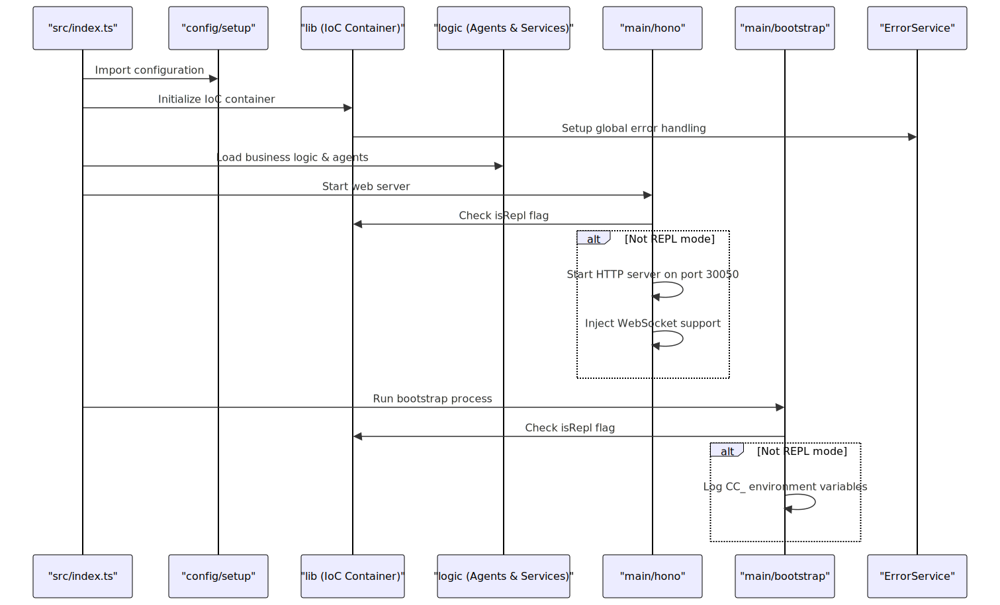

This document covers the main entry points that bootstrap and initialize the signals cryptocurrency trading platform. It explains how the system starts up, what gets initialized, and the relationships between different entry point modules.
For overall system architecture, see System Architecture. For details about the IoC container and service registration, see Configuration and Dependency Injection.
The primary application entry point is located at src/index.ts. This file serves as the central orchestrator that imports and initializes all major system components in a specific order.
The main entry point follows this initialization sequence:

The entry point also exports key system components for external consumption, including enums for SwarmName, AgentName, CompletionName, and ToolName, as well as the IoC container and dependency injection utilities.
The system has three main service entry points that handle different aspects of the platform:
The Hono web server entry point at src/main/hono.ts initializes the HTTP server and WebSocket support:

The server runs on port 30050 and includes route modules for health checks, session management, OpenAI integration, wallet operations, and reporting functionality.
The bootstrap entry point at src/main/bootstrap.ts handles system initialization tasks:

This entry point logs all environment variables with the CC_ prefix to provide visibility into the system configuration during startup.
The system follows a careful initialization sequence to ensure all dependencies are available when needed:

The ErrorService class automatically initializes global error handling during the IoC container setup phase. It registers handlers for uncaught exceptions and unhandled promise rejections:
error.txt and gracefully terminates the processThe error service includes a REPL mode check to avoid interfering with interactive development sessions.
All entry points check the bootstrapService.isRepl flag to determine whether to initialize services. This allows the system to be imported for testing or interactive development without starting servers or background processes.
When isRepl is true:
This design enables safe importing of the system for unit tests, debugging, and development tooling without side effects.